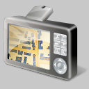

1: POI type
Selecteer hier het type poi
2: Doel apparaat
Kies het gewenste doel apparaat
3: Exporteren
Download poi file
Maak hieronder een keuze welk type POI je wilt downloaden. Je kunt maar 1 type tegelijk downloaden. Het gebied beperkt zich tot de Benelux.
Tankstation
Pinautomaat
Flitspaal
Bushalte
Parkeerplaats
Fiets parkeerplaats
Kerk Moskee Tempel
Ziekenhuis
Supermarkt
Theater
Politie
Brandweer
Brievenbus
Postkantoor
Milieu perron
Restaurant
Fastfood restaurant
Publieke wc
Cafe
Vuilnisbak
Camping
Hotel
Museum
Dierentuin
Kasteel
Windmolen
Vuurtoren
Watermolen
Watertoren
Nachtclub
Stripclub
Volgende >>
1: POI type
Selecteer hier het type POI
2: Doel apparaat
Kies het gewenste doel apparaat
3: Exporteren
Download POI file

Maak hieronder een keuze voor welk apparaat je wilt downloaden.
TomTom overlay (ov2)
Garmin (csv)
GPS Exchange format (gpx)
Google Earth (kml)
<< Terug
Volgende >>
1: POI type
Selecteer hier het type POI
2: Doel apparaat
Kies het gewenste doel apparaat
3: Exporteren
Download poi file
Klik op exporten om de gewenste file te downloaden.
Poi type : -
Apparaat type : -
<< Terug
Exporteren